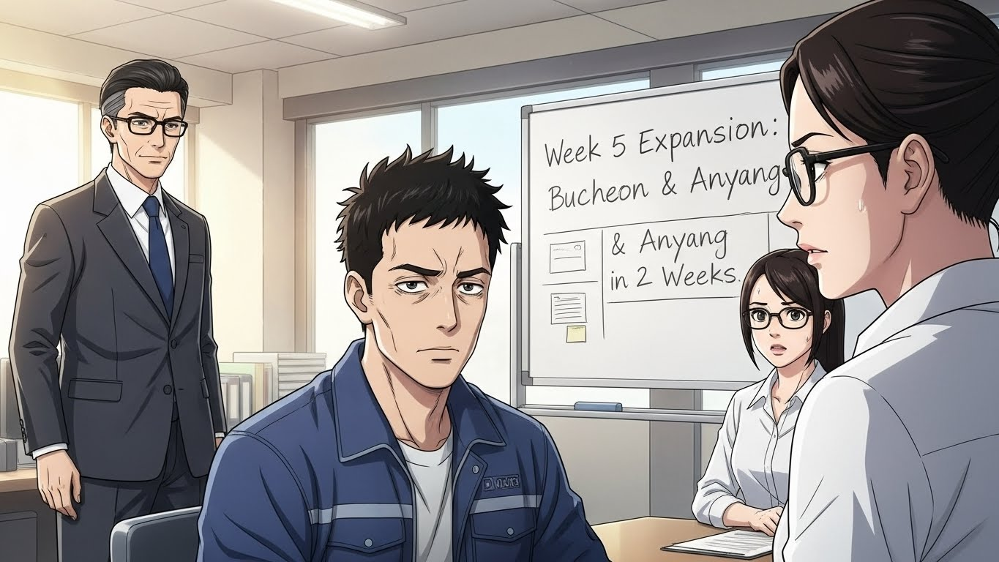
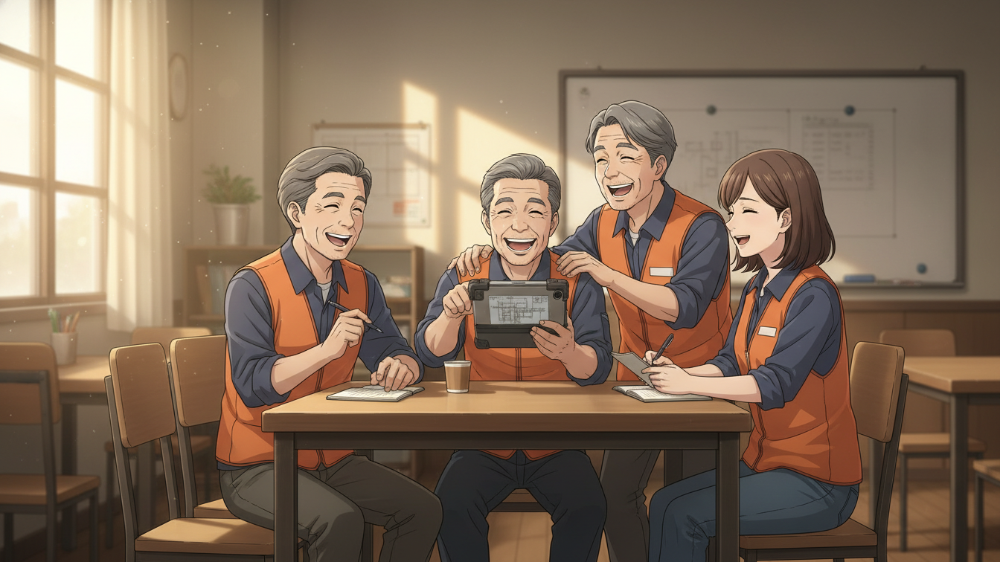

📦 Do, 85% - CJ대한통운 AI 도입 생존기
Episode 14: "확산의 시작"

"2주요?"
도진이 되물었다.
"네. 2주."
정민수 실장이 단호하게 답했다.
"인천 2주차 성과가 좋습니다. 경영진이 속도를 내라고 합니다."
"하지만 계획은 Week 5-6에..."
"계획은 계획일 뿐입니다."
정민수가 도진을 봤다.
"도진 씨, 인천에서 증명했잖아요. 3일 만에 위기를 기회로 바꿨어요. 다른 센터도 할 수 있어요."
"인천은 85명이었습니다. 부천 62명, 안양 54명. 합치면 116명입니다."
도진이 계산했다.
"동시에 하면 관리가..."
"그래서 팀원들이 있는 거 아니에요?"
정민수가 화이트보드에 썼다.
Week 5 동시 확산
- 부천센터: 박민재 담당
- 안양센터: 강태양 담당
- 인천센터: 이소라 지속 관리
- 본사 지원: 도진 + 서윤
"민재 씨는 부천, 태양 씨는 안양. 소라 씨는 인천 계속. 도진 씨랑 서윤 씨는 전체 조율."
"...가능할까요?"
서윤이 조심스럽게 물었다.
"해야죠."
정민수가 답했다.
"경영진 앞에서 저 8주 계획 발표했어요. 그거라도 지켜야 제 목이 붙어 있습니다."
도진이 서윤을 봤다.
서윤이 작게 고개를 끄덕였다.
"...하겠습니다."
"좋아요. 오늘부터 준비하세요. 1월 20일 월요일 동시 시작입니다."
📢 Scene 1: 긴급 팀 회의
7명이 모였다.
도진, 서윤, 이소라, 박민재, 강태양, 정수민, 한지우.
"다들 들었죠?"
도진이 말했다.
"Week 5부터 부천, 안양 동시 확산입니다."
"2주 안에요?"
박민재가 물었다.
"네. 타이트합니다."
"인천도 아직 완전히 안정된 건 아닌데..."
강태양이 걱정스럽게 말했다.
"그래서 더 체계적으로 해야 합니다."
도진이 화이트보드에 그림을 그렸다.
↓
[TF 본부] ← 도진 + 서윤 (조율)
↓
[안양센터] ← 강태양
↓
[인천센터] ← 이소라 (지속 관리)
"각 센터에 담당자 1명씩. 본부에서 조율. 인천은 이소라 씨가 계속 관리."
"근데 팀장님."
정수민이 손을 들었다.
"저랑 지우는요?"
"수민 씨는 개발 지원. 각 센터에서 기술 문제 생기면 즉시 대응. 지우 씨는 데이터 모니터링. 3개 센터 실시간 분석."
"아, 알겠습니다."
"질문 있어요?"
침묵.
"없으면 시작합니다. 민재 씨, 태양 씨, 부천이랑 안양 센터장님들 연락 가능해요?"
"네, 가능합니다."
"오늘 안에 첫 미팅 잡으세요. 인천 사례 공유하고, 우려사항 파악."
"알겠습니다."
🤝 Scene 2: 부천센터 사전 미팅
박민재가 부천센터에 도착했다.
센터장실.
40대 후반 남성. 이재훈 센터장.
"민재 씨, 오랜만이에요."
"센터장님, 안녕하세요."
"앉아요. 본사에서 연락 받았어요. AI 시스템 도입한다고?"
"네, 센터장님."
박민재가 자료를 꺼냈다.
"인천센터 2주 성과입니다."
인천센터 Week 1-2 성과
- 평균 이동 거리: 15% 감소
- 작업 시간: 8% 단축
- 오류율: 12% 감소
- 작업자 만족도: 68% → 78%
이재훈이 자료를 읽었다.
"...좋네요. 근데 부천도 될까요?"
"왜 안 될까 걱정이신가요?"
"부천은... 인천이랑 달라요."
이재훈이 설명했다.
"우리 작업자들 평균 연령이 52세예요. 인천보다 높아요. 태블릿 같은 거 처음 보는 사람들이 많아요."
"인천도 비슷했습니다. 처음엔 어려웠지만, 1:1 지원 강화하니까 3일 만에 적응했어요."
"정말?"
"네. 그리고 센터장님."
박민재가 앞으로 몸을 기울였다.
"부평센터 김영호 센터장님 아시죠?"
"영호? 당연히 알죠. 동기예요."
"그분이 이렇게 말씀하셨어요. '처음엔 나도 반대했는데, 지금은 없으면 안 돼.'"
"영호가?"
"네. 직접 전화하셔서 물어보세요."
이재훈이 전화기를 들었다.
❄️ Scene 3: 안양센터 사전 미팅
강태양이 안양센터에 도착했다.
센터장실.
50대 초반 여성. 한명숙 센터장.
"태양 씨, 처음 뵙겠네요."
"안녕하세요, 센터장님."
"본사에서 온 자료 봤어요. 인천 성과."
한명숙이 자료를 내려놓았다.
"솔직히 말할게요. 안 믿겨요."
"...네?"
"이런 거 전에도 몇 번 봤어요. '혁신 프로젝트', '디지털 전환'. 다 실패했어요."
"이번엔 다릅니다."
"뭐가 달라요?"
강태양이 말문이 막혔다.
한명숙이 덧붙였다.
"숫자는 조작할 수 있어요. 하지만 사람은 못 속여요. 안양 작업자들 54명, 제가 다 알아요. 이 사람들 설득 못 하면 안 해요."
"...알겠습니다."
강태양이 고개를 끄덕였다.
"그럼 작업자분들을 직접 만나 보겠습니다."
"뭐?"
"현장에 가겠습니다. 직접 물어보겠습니다. '이런 시스템 있으면 도움 될까요?'라고."
한명숙이 강태양을 빤히 봤다.
"...좋아요. 해보세요."
🔍 Scene 4: 안양센터 현장 조사
강태양이 작업복을 입고 작업장에 들어섰다.
"실례합니다. 잠깐 여쭤봐도 될까요?"
작업자들이 돌아봤다.
"본사에서 왔어요. 새로운 시스템 도입 검토 중인데, 여러분 의견 듣고 싶어서요."
"무슨 시스템인데요?"
30대 여성 작업자가 물었다.
"태블릿으로 최적 경로 안내해주는 거예요. 어디로 가야 빠른지 알려주고, 실시간으로 업데이트되고요."
"오, 좋은데요?"
"진짜요?"
"네. 저 늘 헷갈리거든요. 402번이 A구역인지 B구역인지..."
"아, 맞아. 나도 그래."
작업자들이 웅성거렸다.
"근데 어려운 거 아니에요?"
50대 남성 작업자가 물었다.
"저 스마트폰도 잘 못 써요."
"괜찮습니다."
강태양이 답했다.
"1:1로 가르쳐드려요. 천천히, 익숙해질 때까지."
"정말요?"
"네. 약속합니다."
강태양이 메모했다.
작업자들의 반응, 우려, 기대.
하나하나 적었다.
⚖️ Scene 5: 본부 조율 회의
도진이 화이트보드 앞에 섰다.
박민재, 강태양이 보고했다.
"부천은 긍정적이에요."
박민재가 말했다.
"이재훈 센터장님이 김영호 센터장님한테 전화했는데, 완전히 설득됐어요. '우리도 하자'고 하세요."
"좋네요. 안양은?"
"...어렵습니다."
강태양이 솔직하게 말했다.
"한명숙 센터장님이 회의적이에요. 과거 실패 경험 때문에."
"어떻게 할 거예요?"
"현장 작업자들은 긍정적이었어요. 그래서... 작업자 중심으로 접근하려고요."
"구체적으로?"
"작업자 대표 2-3명 선정해서, 먼저 테스트해보게 하고, 그분들이 센터장님 설득하는 거죠."
도진이 고개를 끄덕였다.
"Bottom-up. 좋아요. 그렇게 하세요."
"지우 씨, 데이터 준비 상황은?"
"3개 센터 실시간 대시보드 만들었어요."
한지우가 노트북을 돌렸다.
3센터 통합 모니터링 대시보드
- 인천: 진행률 85%, 만족도 78%
- 부천: 준비 중
- 안양: 준비 중
"이동 거리, 작업 시간, 오류율, 만족도. 실시간으로 업데이트돼요."
"완벽해요. 수민 씨, 기술 지원은?"
"3개 센터 동시 장애 대응 체계 만들었어요. 1시간 내 응답 보장합니다."
"좋아요."
도진이 화이트보드에 타임라인을 그렸다.
Week 5 Timeline
- 1/20 (월): 부천, 안양 동시 시작
- 1/21-22 (화-수): 긴급 대응 (예상)
- 1/23-24 (목-금): 안정화
- 1/27 (월): Week 6 돌입
"5일 안에 안정화시켜야 해요. 가능할까요?"
"...해야죠."
서윤이 답했다.
"우리 선택권 없어요."
💡 Hands-On Tutorial: 도진의 병렬 확산 관리 전략
Real-world situation: 도진은 3개 센터에서 동시에 AI 시스템을 도입해야 합니다. 인천 85명, 부천 62명, 안양 54명. 총 201명. 팀원은 5명. 2주 안에. 어떻게 관리할까요?
Copy-paste prompt:
상황:
- 총 규모: {총 인원, 예: "201명"}
- 지점별 규모: {지점1, 예: "85명"}, {지점2, 예: "62명"}, {지점3, 예: "54명"}
- 팀 규모: {팀원 수, 예: "5명"}
- 기간: {기간, 예: "2주"}
- 제약: {제약, 예: "동시 도입 필수, 실패 시 전체 중단"}
각 지점 특성:
- 지점1: {특성, 예: "이미 1개 지점에서 성공, 안정화 필요"}
- 지점2: {특성, 예: "센터장 긍정적, 작업자 고령"}
- 지점3: {특성, 예: "센터장 회의적, 작업자는 관심"}
사용 가능 리소스:
- 담당자: 지점별 1명씩 배치 가능
- 본부 지원: {지원, 예: "총괄 매니저 2명"}
- 기술: {기술, 예: "실시간 모니터링 대시보드"}
다음 형식으로 병렬 확산 관리 계획을 작성해주세요:
1. 조직 구조
- 역할 분담
- 의사결정 체계
- 커뮤니케이션 채널
2. 리스크 분석
- 지점별 주요 리스크
- 공통 리스크
- 리소스 부족 시나리오
3. 우선순위 전략
- 어느 지점에 집중할 것인가
- 리소스 배분 원칙
- 긴급 상황 대응
4. 동기화 메커니즘
- 일일 체크인 프로세스
- 주간 리뷰
- 지점 간 학습 공유
5. 성공 지표
- 지점별 KPI
- 통합 KPI
- Early Warning 지표
실행 가능하고 측정 가능한 계획으로 작성해주세요.
What you'll get:
병렬 확산 관리 계획이 조직 구조, 리스크 분석, 우선순위 전략, 동기화 메커니즘, 성공 지표로 구조화됩니다. 복잡한 다중 지점 관리를 체계적으로 수행할 수 있습니다.
Try it yourself:
- [ ] claude.ai 접속
- [ ] 위 프롬프트 복사
- [ ] {변화/시스템} → 도입할 것 (예: "원격 근무 제도")
- [ ] {개수}, {총 인원}, 지점별 규모 입력
- [ ] {팀원 수}, {기간}, {제약} 명시
- [ ] 각 지점 특성 구체적으로 입력
- [ ] 사용 가능 리소스 파악
- [ ] 실행 후 5단계 계획 확인
- [ ] 조직 구조부터 실제 배치
- [ ] 리스크 분석으로 사전 대비
- [ ] 우선순위 전략으로 리소스 배분
- [ ] 동기화 메커니즘으로 일관성 유지
Example result:
1. 조직 구조
역할 분담:
- 총괄 매니저 (도진): 전체 조율, 최종 의사결정
- 지원 매니저 (서윤): 기술/데이터 지원, 리스크 모니터링
- 지점 담당자:
* 인천 (이소라): 안정화 지속, 타 지점 멘토
* 부천 (박민재): 신규 도입, 센터장 협력
* 안양 (강태양): 신규 도입, 작업자 중심
- 기술 지원 (정수민): 3지점 시스템 장애 대응
- 데이터 분석 (한지우): 실시간 모니터링, 보고서
... (중략)
3. 우선순위 전략
Week 5 우선순위:
Day 1-3 (월-수): 안양 집중
- 이유: 가장 회의적, 조기 성공 사례 필수
- 배분: 도진 40% / 서윤 30% / 강태양 100%
... (중략)
5. 성공 지표
Early Warning 지표:
⚠️ 주의 (Yellow):
- 만족도 60% 미만
- 불만 제기 10건+/일
🚨 위험 (Red):
- 만족도 50% 미만
- 센터장 중단 언급
🌱 Scene 6: D-5 준비
이소라가 작업자들과 마주 앉았다.
"다음 주부터 부천이랑 안양도 시작해요."
"오, 진짜요?"
"네. 그래서 부탁이 있어요."
이소라가 진지하게 말했다.
"부천, 안양 작업자들한테 조언 좀 해주실 수 있어요? 경험담 같은 거."
"뭘 말해줘요?"
"처음엔 어려웠지만 익숙해졌다는 것. 실제로 편해졌다는 것."
작업자들이 서로 봤다.
"우리가 그런 역할을 해요?"
"네. 여러분이 선배예요. 인천이 먼저 시작했으니까."
작업자들이 웃었다.
"좋아요. 해줄게요."

🚀 Scene 7: D-Day
박민재가 62명 앞에 섰다.
"안녕하세요. 오늘부터 새로운 시스템을 시작합니다."
작업자들의 불안한 얼굴.
"어려울 수 있어요. 하지만 여러분 혼자가 아닙니다."
프로젝터에 화면이 떴다.
인천센터 작업자들의 영상이었다.
"처음엔 무서웠어요. 태블릿 처음 봤거든요."
"근데 3일 지나니까 괜찮더라고요."
"지금은 이거 없으면 일 못 해요."
부천 작업자들이 화면을 봤다.
"저 사람들도 했네?"
"그럼 우리도 할 수 있겠다."
강태양이 54명 앞에 섰다.
"먼저, 작업자 대표 3분 나와주세요."
30대 여성, 40대 남성, 50대 남성.
"이 세 분이 먼저 테스트하셨습니다. 이야기 들어보시죠."
30대 여성이 말했다.
"저 어제 하루 써봤는데요. 생각보다 쉬워요. 그리고... 진짜 빠른 길 알려줘요."
40대 남성이 덧붙였다.
"저 25년 일했는데, 제가 모르던 지름길도 있더라고요."
50대 남성이 말했다.
"저 스마트폰도 잘 못 써요, 이건 배우면 돼요. 버튼이 크고 단순해서."
작업자들의 표정이 조금 풀렸다.
🚨 Scene 8: 첫날 위기 (부천)
박민재의 전화가 울렸다.
"팀장님, 문제 생겼어요!"
"뭔데요?"
"시스템이 먹통이에요. 10명 태블릿이 로그인이 안 돼요."
"수민 씨!"
도진이 정수민을 불렀다.
"부천 시스템 문제. 확인해주세요."
"네!"
정수민이 노트북을 열었다.
"...서버 과부하예요. 3개 센터 동시 접속이라..."
"얼마나 걸려요?"
"10분이면 해결돼요."
"민재 씨한테 전달하세요. 10분 휴식."
🛑 Scene 9: 첫날 위기 (안양)
강태양의 전화.
"팀장님, 센터장님이..."
"뭐래요?"
"작업자 5명이 거부해요. '이거 안 쓰겠다'고."
"이유는?"
"'쓸데없는 것 배우느라 시간 낭비'래요."
도진이 생각했다.
"제가 갈게요."
"네?"
"30분 후에 도착합니다."
🗣️ Scene 10: 안양 5인 설득
5명의 작업자가 앉아 있었다.
전부 50대.
도진이 들어왔다.
"안녕하세요. 본사 최도진입니다."
"..."
"제 말 들어주시겠어요? 10분만요."
한 작업자가 팔짱을 꼈다.
"본사 사람이 뭘 알아요? 현장도 모르면서."
"저 현장 출신입니다."
도진이 조용히 말했다.
"부평센터에서 5년 일했어요. 지게차 운전하고, 분류 작업하고, 배송 나갔어요."
작업자들이 조금 놀랐다.
"...진짜요?"
"네. 그래서 알아요. 새로운 거 배우는 게 얼마나 피곤한지."
도진이 앞으로 몸을 기울였다.
"5년 동안 몸으로 익힌 걸 버리고 새 걸 배우라니. 화나시죠?"
"...맞아요."
한 작업자가 말했다.
"30년 일했어요. 지금까지 잘해왔는데, 왜 바꿔야 해요?"
"바꾸는 게 아니에요."
도진이 답했다.
"돕는 거예요. 30년 경험에 도구를 더하는 거예요."
"무슨 소리예요?"
"예를 들어볼게요. 아저씨, 402번 어디 있어요?"
"B구역 3번 통로."
작업자가 즉답했다.
"맞아요. 아저씨는 알아요. 30년 경험이니까. 근데 신입은요?"
"...물어봐야죠."
"맞아요. 그럼 아저씨 일이 멈춰요. 가르쳐주느라."
도진이 태블릿을 보여줬다.
"이게 대신 가르쳐줘요. 아저씨는 자기 일에만 집중하시면 돼요."
작업자가 태블릿을 들여다봤다.
"...이게?"
"네. 그리고 아저씨도 30년 일했지만 모르는 게 있을 거예요. 새로 들어온 상품 위치 같은 거."
"맞아요. 요즘 너무 많이 바뀌어서..."
"이게 알려줘요. 실시간으로."
작업자가 침묵했다.
"...한 번 해볼게요."
"감사합니다."
📊 Scene 11: 첫날 종료
세 지점 담당자가 화면에 모였다.
"첫날 보고합니다."
박민재가 시작했다.
"부천. 시스템 장애 1건, 10분 만에 해결. 적응률 55%. 긍정적입니다."
강태양이 이었다.
"안양. 거부 5명, 팀장님 설득으로 해결. 적응률 48%. 불안하지만... 버틸 수 있어요."
이소라가 마지막으로 말했다.
"인천. 안정적. 만족도 81%. 부천, 안양 멘토링 제공 중입니다."
도진이 고개를 끄덕였다.
"잘했어요. 모두."
"팀장님."
서윤이 화면을 공유했다.
3센터 통합 현황 (Day 1)
| 센터 | 인원 | 적응률 | 만족도 | 이슈 |
|---|---|---|---|---|
| 인천 | 85명 | 85% | 81% | 없음 |
| 부천 | 62명 | 55% | 62% | 해결 |
| 안양 | 54명 | 48% | 58% | 해결 |
| 전체 | 201명 | 64% | 68% | 관리 중 |
"전체 적응률 64%. 나쁘지 않아요."
"내일이 중요합니다."
도진이 말했다.
"오늘보다 나아져야 해요. 모든 지점에서."
"네!"
🌌 Scene 12: 밤
도진이 소파에 앉아 있었다.
노트북 화면에는 3센터 대시보드.
실시간 데이터가 깜빡였다.
핸드폰이 울렸다.
서윤이었다.
"팀장님, 아직 안 주무세요?"
"네. 못 자겠어요."
"왜요?"
"3개 센터... 제대로 할 수 있을까 싶어서요."
"..."
"인천 하나도 죽을 뻔했는데, 이제 3개를..."
"팀장님."
서윤이 말을 끊었다.
"혼자 하는 거 아니에요."
"네?"
"민재 씨, 태양 씨, 소라 씨. 다들 열심히 하고 있어요. 수민 씨, 지우 씨도요. 팀장님 혼자 짊어질 필요 없어요."
도진이 침묵했다.
"그리고 팀장님."
"네."
"오늘 안양 가셨잖아요. 5명 설득하신 거."
"...네."
"저 그거 들었어요. 태양 씨한테."
서윤의 목소리가 따뜻했다.
"'30년 경험에 도구를 더하는 거다.' 정말 좋은 말이었어요."
"...감사합니다."
"내일 봐요. 푹 주무세요."
전화가 끊겼다.
도진이 창밖을 봤다.
어두운 밤.
하지만 별이 보였다.
🎯 Learning Concept: "확산은 복제가 아니다"
Level 4 Concept: Adaptive Scaling (적응적 확장)
확산은 복제가 아닙니다. 인천에서 성공한 방법을 부천, 안양에 그대로 적용하면 실패합니다. 각 조직은 고유합니다. 도진은 이걸 알았습니다. 부천은 고령 작업자, 안양은 회의적 센터장. 같은 시스템, 다른 접근. 이것이 적응적 확장입니다.
Why it matters in 조직 변화:
한 부서에서 성공했다고 전사에 밀어붙이면 저항만 키웁니다. 각 조직의 특성을 이해하고, 방법을 조정하세요. 목표는 같되, 경로는 다르게.
Remember (도진의 원칙):
"같은 시스템, 다른 접근. 각 센터는 고유하다."
**[Episode 14 완료]**
1월 27일. Week 6 시작. 3개 센터 동시 운영 2주차. 안정화되는 부천, 위기의 안양. 그리고... 정민수 실장의 새로운 압박. "Week 8까지 12개 센터 전부." Episode 15에서 계속됩니다.